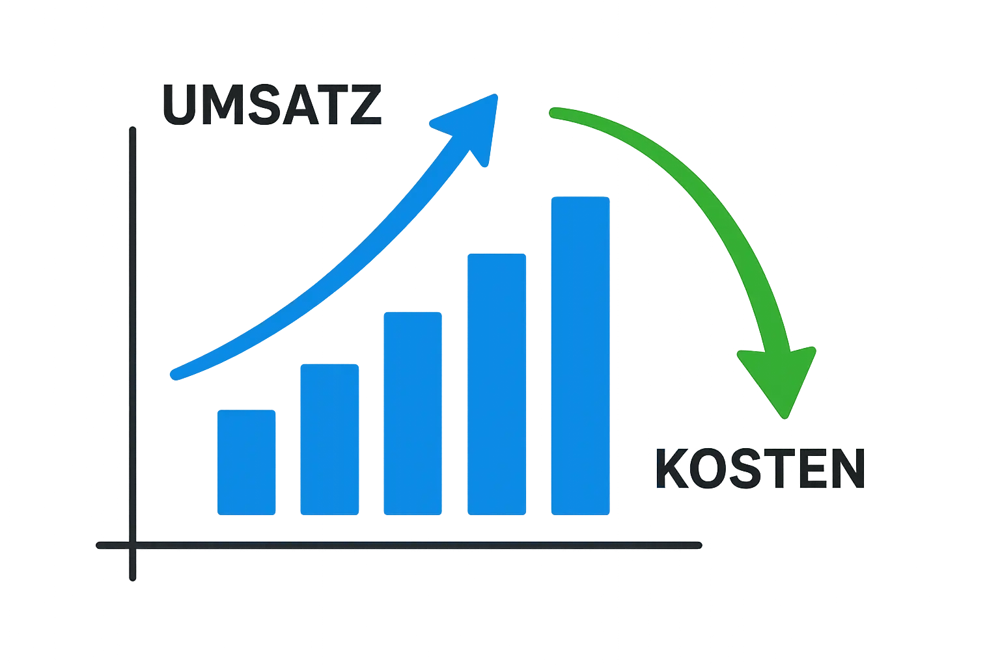

Verkaufen Sie schneller, einfacher & effizienter
Optimieren Sie Ihren Verkaufsprozess in nur 7 Tagen – mit einem praxiserprobten System.
Für Unternehmer, die ihren Vertrieb skalieren möchten –
ohne Chaos, Stress oder
komplizierte Tools.
- Weniger Stress im Vertrieb durch automatisierte Abläufe
- Mehr Struktur: Prozesse, die sich anpassen & skalieren
- In 7 Tagen startklar – ohne technisches Vorwissen
Diese Probleme kosten Sie jeden Tag Umsatz.
Viele Unternehmen kämpfen mit denselben Herausforderungen. Kommt Ihnen das bekannt vor?
Chaos in der Kommunikation
E-Mails, Zettel, WhatsApp – nichts ist dokumentiert. Leads gehen unter.
Zeitfresser im Alltag
Statt Verkaufsgespräche zu führen, tragen Sie Daten manuell hin und her.
Veraltete Prozesse
Sie nutzen Tools, die vor 10 Jahren modern waren – und heute alles aufhalten.
Keine Nachverfolgung
Interessenten verschwinden im Nirgendwo. Follow-up? Fehlanzeige.
Keine Klarheit im Team
Wer macht was bis wann? Unklarheit führt zu Fehlern – und Stress.
Sie müssen nicht so weitermachen. Mit salesfast automatisieren Sie diese Abläufe – ohne Technik-Frust.
Die Lösung:
Das salesfast System
SalesFast ist Ihr Weg zu einem strukturierten, effizienten und modernen Verkaufsprozess. Wir implementieren ein maßgeschneidertes System, das auf bewährten Tools wie CRM und Automatisierungsplattformen basiert. Das Ergebnis: Mehr Klarheit, weniger Aufwand, mehr Erfolg.
Ihre Vorteile mit salesfast
Zeitersparnis
Sparen Sie typ. 8-12 Stunden/Woche durch Automatisierung.
Mehr Zeit
für Ihr Kerngeschäft!
Mehr Umsatz
Steigern Sie Ihre Abschlussquote durch optimierte Prozesse und konsequentes Follow-Up.
Skalierbarkeit
Ein sauberes System ermöglicht nachhaltiges Wachstum ohne Chaos.
Bessere Kundenbeziehungen
Schnellere Reaktionszeiten und professionelle Betreuung steigern die Zufriedenheit.
Stärkere Reputation
Sammeln Sie mehr positive Bewertungen durch begeisterte Kunden.
Modern & Ortsunabhängig
Arbeiten Sie digital, flexibel und von überall.
Der Weg zu Ihrem optimierten Sales-Prozess
Wir führen Sie strukturiert durch die Implementierung Ihres neuen Systems, damit Sie schnell Ergebnisse sehen.
Analyse Ihres aktuellen Prozesses
Gemeinsam schauen wir uns genau an, wie Sie aktuell arbeiten, identifizieren Engpässe und definieren klare Ziele für die Optimierung.
Einrichtung & Konfiguration des CRM-Systems
Wir wählen gemeinsam das passende CRM aus und richten es maßgeschneidert auf Ihre Bedürfnisse ein.
Implementierung von Automatisierungen
Wir nutzen Tools wie Zapier oder Make.com, um wiederkehrende Aufgaben (z.B. Follow-Ups, Dateneingabe) zu automatisieren und Ihnen Zeit zu sparen.
Schulung & Übergabe
Ihr Team wird umfassend geschult, damit alle das neue System effizient nutzen können. Wir übergeben Ihnen eine saubere Dokumentation.
Kontinuierliche Optimierung (optional)
Auf Wunsch begleiten wir Sie weiter, analysieren KPIs und nehmen fortlaufend Anpassungen zur Verbesserung vor.
Wer steckt hinter SalesFast?
Jan van de Weyer, Gründer & Vertriebsoptimierer
Meine Mission: Klarheit im Vertrieb schaffen
Ich bin Jan und habe SalesFast aus der Praxis heraus entwickelt: Im Unternehmen meines
Vaters gab es keinen echten Vertriebsprozess – nur Zettel auf dem Schreibtisch. Also habe
ich über 12 Monate ein System aufgebaut, das Klarheit, Effizienz und ortsunabhängiges
Arbeiten ermöglicht.
Erfahrung aus dem echten Unternehmeralltag
Zuvor war ich fünf Jahre im Betrieb aktiv, habe ihn digitalisiert und mit skaliert. Mein
Know-how stammt nicht aus Lehrbüchern, sondern direkt vom Schreibtisch, aus der Werkstatt
und aus dem Kundenkontakt – 100 % praxisbasiert.
Was mich antreibt – und was Kunden davon haben
Mein Aha-Moment kam, als ich merkte, wie einfach und flexibel Vertrieb wird, wenn Prozesse
und Datenstrukturen sauber stehen – für mich und für Mitarbeitende. Genau das möchte ich
weitergeben: individuelle Systeme, die wirklich zum Unternehmen passen.
Nächster Schritt: Ihr Vertrieb, neu gedacht
Lassen Sie uns gemeinsam herausfinden, wie auch Ihr Vertrieb aufs nächste Level kommt.
Erfolg in der Praxis: Die Metallmanufaktur
Vorher (Metallverarbeiter, NRW)
- Chaotische E-Mail-Inboxen & Papierkram
- Keine zentrale Lead-Speicherung
- Unklarer, chefabhängiger Prozess
- Mangelndes Follow-Up & verlorene Leads
- Keine Skalierung des Sales-Teams möglich
- Implementierung von KI unmöglich
Nachher mit SalesFast
- Klar strukturiertes, digitales System
- Alle Leads zentral erfasst & bearbeitbar
- Ortsunabhängiges Arbeiten
- Schnellere Antwortzeiten
- Bessere Kundenbetreuung
- KPIs zur Erfolgsmessung
- KI einfach zu integrieren
- Ergebnis: +22% Umsatzsteigerung
Der Effekt: Kosten runter, Umsatz rauf!
Klare Vertriebsstrukturen steigern den Umsatz und senken die Kosten.
Wissenschaftlich belegt: Struktur und Follow Up zahlt sich aus
"Firmen mit einem standardisierten Vertriebsprozess erzielen einen bis zu 28 % höheren Umsatz im Vergleich zu Unternehmen ohne strukturierten Ansatz"
"80 % der Deals werden erst nach mindestens fünf Follow-up-Kontakten erfolgreich zum Abschluss gebracht."
Wählen Sie das passende SalesFast Paket für Sie
Wir bieten flexible Optionen, um Ihren Sales-Prozess optimal zu unterstützen.
Basis
Der ideale Einstieg für Selbstständige & kleine Teams.
- Vertriebsanalyse
- Umfassender Videokurs
- Praxiserprobte Vorlagen
- Wöchentliche Live-Q&A-Calls
- 4 Wochen persönliche Betreuung
- Erweiterte Systemanalyse
- Gemeinsame Abschlusskontrolle
- Bonus Mastermind Call
Standard
Die Komplettlösung für ambitionierte Unternehmen.
(statt 5.900 €)
- Vertriebsanalyse
- Umfassender Videokurs
- Praxiserprobte Vorlagen
- Wöchentliche Live-Q&A-Calls
- 6 Wochen persönliche Betreuung
- Erweiterte Systemanalyse (1 Std.)
- Gemeinsame Abschlusskontrolle (1-2 Std.)
- Bonus: 1x wöchentl. 1-zu-1 Mastermind Call
Garantie: Umsatzsteigerung in 6 Wochen oder 6 weitere Wochen gratis!
Erweitert (Premium)
Maximale Unterstützung für schnelles Wachstum & komplexe Setups.
- Vertriebsanalyse
- Umfassender Videokurs
- Praxiserprobte Vorlagen
- Wöchentliche Live-Q&A-Calls
- 12 Wochen persönliche Betreuung
- Erweiterte Systemanalyse (1 Std.)
- Gemeinsame Abschlusskontrolle (1-2 Std.)
- Bonus: 1x wöchentl. 1-zu-1 Mastermind Call
- Zusätzliches Modul: Automatisierte Angebote
Häufig gestellte Fragen (FAQ)
Hier finden Sie Antworten auf die wichtigsten Fragen zu SalesFast und unserem Prozess.
Für wen ist SalesFast geeignet?
SalesFast ist ideal für Selbstständige, kleine und mittlere Unternehmen (KMU) sowie Start-ups, die ihren Vertriebsprozess strukturieren, automatisieren und skalieren möchten – insbesondere, wenn Sie aktuell viel manuell arbeiten, den Überblick verlieren oder keine klaren Prozesse haben.
Was kostet die Einrichtung?
Die Kosten für die einmalige Einrichtung Ihres SalesFast Systems sind abhängig vom gewählten Leistungspaket und der Komplexität Ihrer individuellen Anforderungen. Genaueres dazu und ein passendes Angebot besprechen wir gerne unverbindlich im persönlichen Erstgespräch.
Unverbindliches Erstgespräch buchen
Wie hoch sind die laufenden Kosten?
Für Einzelunternehmer oder kleine Teams belaufen sich die monatlichen Kosten für die notwendigen Tools in der Regel auf etwa 100 € pro Monat. Höhere Kosten fallen nur dann an, wenn Ihr Unternehmen wächst – also zum Beispiel mehr Benutzer für das CRM benötigt werden – oder wenn die Automatisierungen in sehr hohem Umfang genutzt werden.
Welche Tools werden hauptsächlich verwendet?
Wir setzen auf bewährte und flexible Tools. Kernbestandteil ist oft ein CRM-System wie z.B. Close.com, Pipedrive oder HubSpot (je nach Bedarf). Für die Automatisierung nutzen wir häufig Make.com oder Zapier, um das CRM mit anderen Tools (Kalender, E-Mail, etc.) zu verbinden.
Wie lange dauert die Implementierung?
Unser Ziel ist es, dass Ihr Grundsystem innerhalb von 7 Tagen einsatzbereit ist. Die Dauer für komplexere Anpassungen und die vollständige Einarbeitung hängt vom gewählten Paket und Ihren individuellen Anforderungen ab. Im Standard-Paket begleiten wir Sie intensiv über 6 Wochen.
Brauche ich technisches Vorwissen?
Nein. Sie erhalten Schritt-für-Schritt neue Videos und Dokumente, die Ihnen bei der Einrichtung und der Anwendung helfen.
Was passiert nach der Implementierung?
Nach der Übergabe können Sie das System selbstständig nutzen. Je nach Wunsch bieten wir weitere Betreuung an (z.B. KPIs analysieren, fortlaufende Optimierung, 1-zu-1 Calls). Ziel ist, dass Sie langfristig erfolgreich mit dem System arbeiten und mehr Geld in weniger Zeit verdienen.
Bereit für den nächsten Schritt?
Vereinbaren Sie jetzt Ihr kostenloses Erstgespräch und starten Sie durch zu mehr Struktur und Umsatz im Vertrieb.
Kostenloses Erstgespräch buchen (ca. 15 Min.)